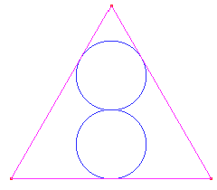
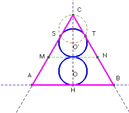
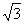

Solución Saturnino Campo Ruiz, profesor de Matemáticas del I.E.S. Fray Luis de León (Salamanca) (17 de febrero de 2003)
Problema nº 78.- Construir la siguiente figura donde el triángulo es equilátero y las dos circunferencias tienen el mismo radio.

Ampliación del editor:
¿Cuanto mide el radio de la circunferencia si el lado del triángulo mide 10 cm?
Solución.- Trazando la tangente común MN a los círculos, el de centro O’ queda inscrito en el triángulo equilátero CMN. Su centro es el baricentro y el ortocentro, así pues el diámetro del mismo es 2/3 de su altura. De este modo resulta que la altura del triángulo ABC que contiene a los dos círculos, es igual a 5 veces el radio de éstos.
La construcción se realiza fácilmente de una de estas dos maneras:

a) Si se parte del radio r = OH, se dibujan las dos circunferencias tangentes, una sobre otra, y sobre la semirrecta HO, se traza el punto C, tal que O’C es un diámetro.Se construyen desde C las tangentes al círculo centrado en O’ (los puntos de tangencia S y T se determinan con la circunferencia auxiliar de diámetro O’C) que cortan en los vértices A y B a la tangente en H al de centro O.
b) Si se parte del triángulo ABC, trazamos la altura CH que dividimos en 5 partes iguales (usar T. de Thales). De este modo tenemos r. El resto es trivial.
c) El radio es 1/5 de la altura, y ésta
es igual al lado multiplicado por el coseno de 30º (< BCH = 30º).
Así pues r = ·l·cos
30 = ·10·cos
30 = 